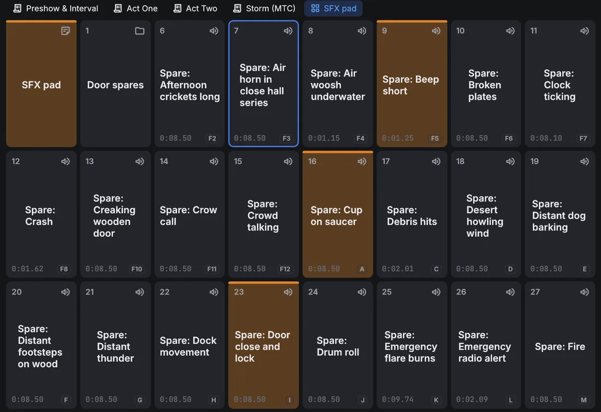

Getting started
1.1Installing and first show
Installing
OpenQ is installed by its installer, OQup. OQup downloads the newest release of OpenQ for your system, checks it, adds the FFmpeg libraries it uses for video (an LGPL build) and installs it with a menu entry. With the lighting workspace (the default) it also installs OQVis, the 3D visualiser that Open in OQVis starts. Your shows are never touched.
You need an internet connection. On Linux OQup may need your password to install a few system libraries (sound, devices); it asks first.
Linux
- Open a terminal, paste the command below and press Enter:
curl --proto '=https' --tlsv1.2 -fsSL https://github.com/iagonunez/OQup/releases/latest/download/install.sh | sh - The first step downloads OQup, checks it against the published checksum and puts it in
~/.local/bin. Then it starts. - If system libraries OpenQ needs are missing (ALSA, PipeWire, udev), OQup lists them and asks before installing them with your distribution's package manager. Answer yes; the package manager asks for your password.
- Leave the terminal open until it says that OpenQ is installed.
- Open OpenQ from your applications menu (search for "OpenQ"), or type
openqin a terminal.
If the terminal says openq: command not found, ~/.local/bin is not in your PATH yet. Add it
once, then open a new terminal:
fish_add_path ~/.local/bin # fish
echo 'export PATH="$HOME/.local/bin:$PATH"' >> ~/.bashrc # bash (zsh: ~/.zshrc)macOS
- Open Terminal (press ⌘ Space and type "Terminal").
- Paste the command below and press Enter:
curl --proto '=https' --tlsv1.2 -fsSL https://github.com/iagonunez/OQup/releases/latest/download/install.sh | sh - The app is placed at
~/Applications/OpenQ.app, the Applications folder in your home folder, with FFmpeg inside it. Open it from the Finder (Go → Home → Applications) or with Spotlight.
Windows
- Open PowerShell: press the Start key, type PowerShell and press Enter.
- Paste the command below and press Enter:
powershell -ExecutionPolicy Bypass -c "irm https://github.com/iagonunez/OQup/releases/latest/download/install.ps1 | iex" - When it is done, OpenQ is in the Start menu and listed under Settings → Apps → Installed apps.
Building on your own computer
oqup install --build-source compiles OpenQ (and OQVis) from the source code on your computer instead of
downloading the release. OQup installs what the build needs first: a private copy of Rust if there is none, a C
compiler and libclang, and FFmpeg (on Linux from your distribution's packages, after asking; on macOS Apple's Command
Line Tools, then FFmpeg compiled from its source; on Windows Microsoft's C++ Build Tools, whose installer opens for you
to accept). It needs several gigabytes of free space and the first build takes a long time; later ones are quicker.
If something goes wrong
oqup doctorshows what is installed and what an install still needs.- If the install stops, read the last lines it printed, fix the cause (usually a missing package or a cancelled installer) and run the command again.
Updating and removing
To get a newer version, run oqup update: it installs OpenQ again when a new version is released, the same
way as last time. oqup versions lists the versions you can install, and oqup install --ref v0.4.0
installs one of them. To remove OpenQ, run oqup uninstall; it asks first. Add --purge to remove
OQup's downloads, Rust, dependencies and build cache as well. On Windows you can also remove OpenQ from
Settings → Apps → Installed apps. Your shows are never touched.
If you only need cues, oqup install --no-lighting installs OpenQ without the lighting workspace (no
Lighting view, Light cues, fixture downloads or OQVis). Shows with a lighting design still open, keep it and play their
Light cues. oqup install --lighting adds it back; --no-oqvis keeps the lighting but leaves
OQVis out.
To run a copy you are working on from source instead:
cargo run --release # start with an empty show
cargo run --release -- show.openq # open a saved showThis manual is built into OpenQ: choose or press F1 to open it in your web browser, in the language of the interface. It works without an internet connection and always matches your version of OpenQ.
Your first show
- Drag audio or video files from your file manager onto the window. Each file becomes a cue. You can also use .
- Add other cues from the toolbar above the cue list, or press Ctrl+1…0.
- Select a cue and set its options in the inspector at the bottom of the window.
- Click the first cue to put the playhead on it, then press Space (GO).
- Save with Ctrl+S. Shows are saved as
.openqfiles. Media paths are stored relative to the show file, so you can move the show folder as a whole.
Keep the show file in the same folder as its media. Then the folder can be copied to another computer and opened there unchanged.
Bundling a show
copies the show and every sound and movie it plays into one folder:
pick where, and OpenQ makes a folder named after the show with the show file in it and the media in
audio/ and video/. Copy that folder to another computer, or keep it as an archive. Files
missing from the disk are listed and left out. The show you have open doesn't change.
1.2The main window

- Title bar: the show's name (a dot means unsaved changes). On Windows it also holds the minimise, maximise and close buttons: drag the bar to move the window, double-click it to maximise, and drag any window edge to resize.
- Menus: File, Edit, Cue, Show, Video (stages and outputs), Remote, View (geometry preview, engine log) and Help (this manual, the error log, about and licenses).
- GO fires the cue at the playhead. The standby card shows that cue, with its notes underneath so the operator can read them before pressing GO.
- Transport: pause all, resume all, stop all. Next to them, the output meters show each device channel in dB.
- Cue list tabs: one tab per cue list (see below).
- Cue list: number, name, target (file details or the target cue), pre-wait, action time, post-wait and the continue arrow. Running cues turn green, and their action column counts down. A red icon marks a missing file or target. Files are checked in the background every couple of seconds, so a slow network drive never freezes the window, and a drive plugged back in clears the icon on its own.
- Active cues: every running cue with elapsed and remaining time, plus its own pause and stop buttons.
- Inspector: the settings of the selected cue, in tabs. Each tab groups its settings in cards. It opens tall enough to show a whole tab; drag its top edge to resize it.
- Status bar: the Edit / Show switch at the left, then the audio device, video status, OSC, remote connections and messages. The button at the right opens Settings. A warning from the engine appears next to it for a few seconds and opens the engine log; messages on the left of the bar also fade out after a few seconds.
Working with the cue list
- Click a cue to select it and move the playhead to it. Use Ctrl-click to select several cues, Shift-click for a range, and ↑ ↓ to move the playhead.
- Drag cues to reorder them. Drop onto the middle of a group row to put cues inside it.
- Double-click a number, name, pre-wait or post-wait to edit it in place. Enter commits and Esc cancels.
- Click the continue column to cycle do not continue → auto-continue → auto-follow.
- Right-click a row for start, stop, duplicate, delete and more.
Cue lists
A show can have several cue lists, for example the main sequence and a list of sound effects to fire by hand. Each list has a tab above the toolbar; click a tab to bring that list forward. GO, the playhead and the standby card work on the list in front, and each list remembers where its playhead was.
- Click to add a list. Right-click the current list's tab to rename it (or double-click it), move it, set its timecode, or delete it.
- Cues keep playing when you switch lists, and Start, Stop, Fade and other cues can target cues in any list. In the target menu, cues from other lists show the list's name.
- Cue numbers are shared by all lists, so OSC and hotkeys reach cues in every list.
Cart lists
A cue list can be a cart: a grid of buttons, each firing its own cue, for sound effects on demand, stings or spare cues. Right-click the list's tab and tick Cart: a grid of buttons; set how many buttons across and down below it (more rows appear when there are more cues). A cart has no playhead: GO does nothing there.

- Show mode: click a button to fire its cue; a cue that is already running does what its second trigger setting says (restart by default). Right-click a button to stop its cue. A running button fills with its progress and shows the time left.
- Edit mode: click a button to select it (the inspector edits it), double-click to fire it, and drag it onto another cell to move it there (swapping with the button there). New cues take the first free cell.
- Hotkeys, MIDI and timecode triggers fire cart cues as they do any other cue.
1.3Edit and show mode
Edit mode is for building the show: everything can be changed. Show mode is for running it. The list is locked, the toolbar and inspector are hidden, and rows get bigger so they are easy to read in a dark booth. GO, stop, pause, hotkeys and moving the playhead all work in both modes.
Switch with the switch at the left of the status bar, , or Ctrl+E.

Stopping
Esc or the red stop button fades everything out over the stop-all fade time (see Settings). Press it again during that fade to stop instantly.
Double-GO protection ignores a second GO that comes within a short time of the first, so a bounced key doesn't skip a cue.
1.4Settings
, or the button at the right of the status bar. These are saved with the show, except the language and the control surface MIDI input, which belong to the computer.
| Tab | Settings |
|---|---|
| General | Interface language (English, Spanish or Galician; changes at once), stop-all fade time, double-GO protection, master volume, OSC on/off and port. |
| Audio | Output device. Changing it stops all playback. Routing matrices address this device's outputs. The room for object audio: the speakers, where they stand and which output each one is on. |
| Stages | Add and name stages, canvas size, output display, fullscreen, mapping. |
| Control surfaces | This computer's MIDI input and the show's control surface mappings, with learn. |
Settings → General also holds the loudness target for levelling cues (Loudness); Settings → Audio, the audio patches.

Until you change it, the room follows the output device: a stereo pair, quad, 5.1 or 7.1 (with no speaker on the LFE output), or a ring for other channel counts. The presets set those up, and Use default goes back to following the device. Front, where the stage is, is at the top. Several speakers can share an output.
Remote access settings and device keys belong to the computer, not the show. They live in
~/.config/openq/remote.json, readable only by your user account.
1.5Keyboard shortcuts
| Keys | Action |
|---|---|
| Space | GO |
| Esc | Stop all (fade); press again to stop instantly. Also cancels an edit in a row. |
| P / R | Pause all / resume all |
| ↑ ↓ | Move the playhead |
| ← → | Collapse / expand a group |
| Ctrl+E | Switch edit / show mode |
| Enter | Rename the selected cue in place |
| Ctrl+1 … 0 | New Audio, Video, Group, Wait, Memo, Fade, Start, Stop, Pause, Go To cue |
| Ctrl+D · Ctrl+G · Del | Duplicate · group selection · delete |
| Ctrl+Z · Ctrl+Shift+Z | Undo · redo (up to 200 steps; very large shows keep fewer, at least 10, to save memory) |
| Ctrl+N / O / S / Shift+S | New / open / save / save as |
| F1 | Open this user manual |
| F11 | Fullscreen, in a stage window |
| ← → ↑ ↓ (+Shift) | Nudge the hovered corner pin 1 (10) pixels while mapping |
| Cue hotkey | Fires that cue directly (set on the Triggers tab) |